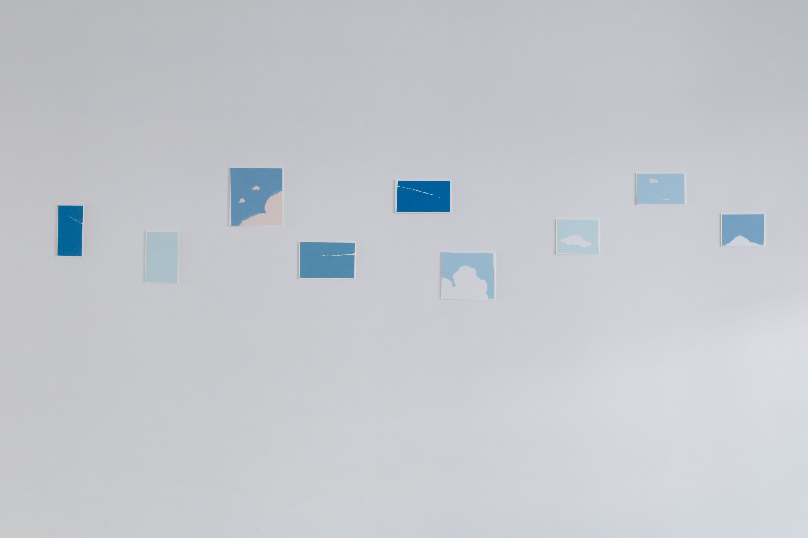
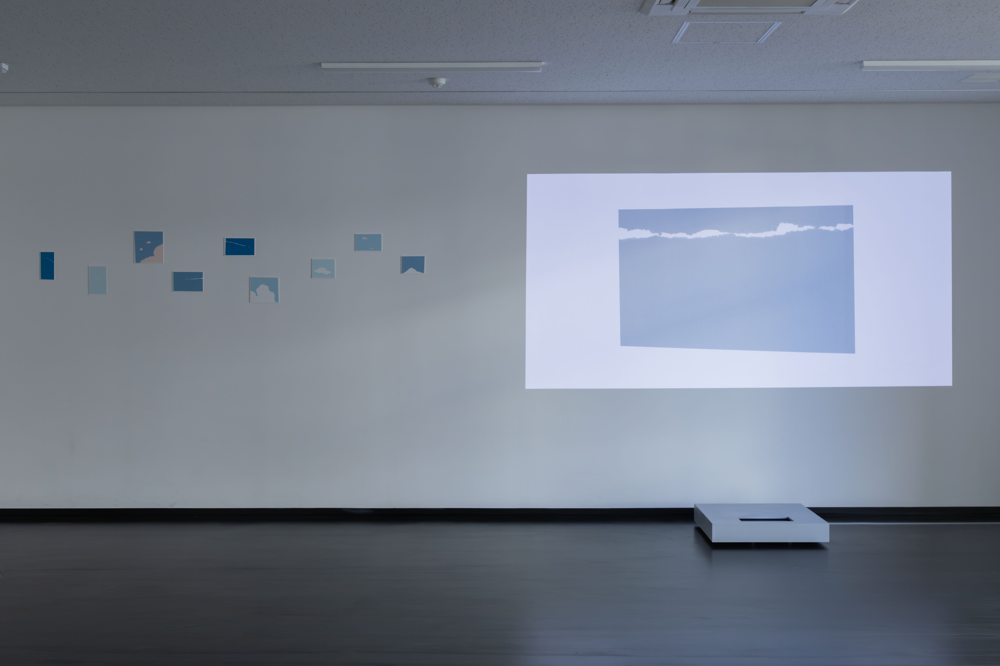
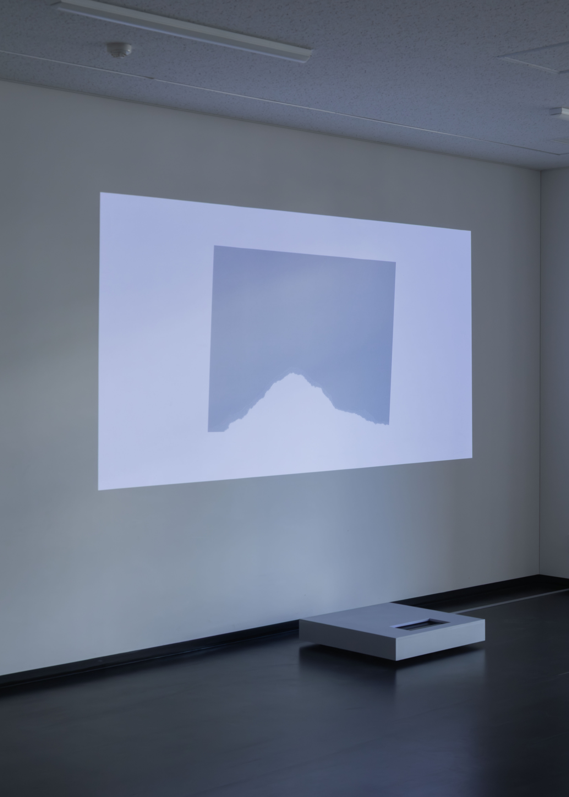
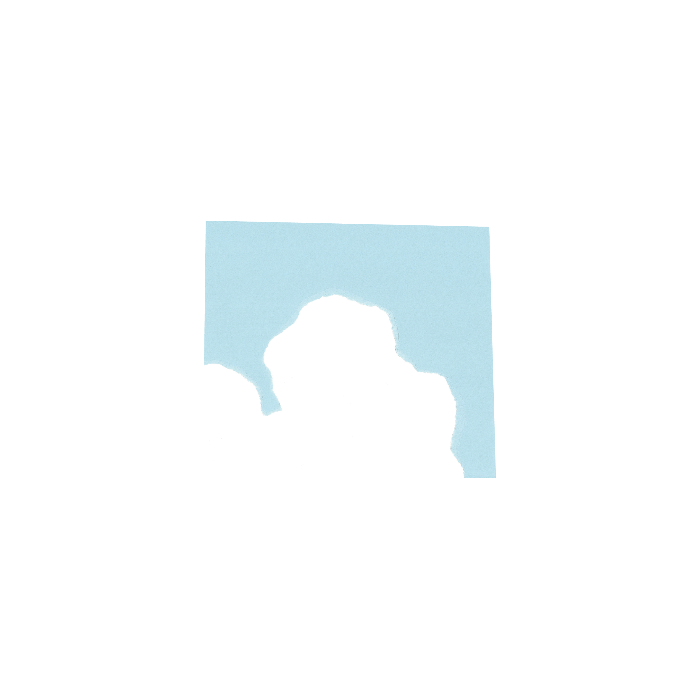
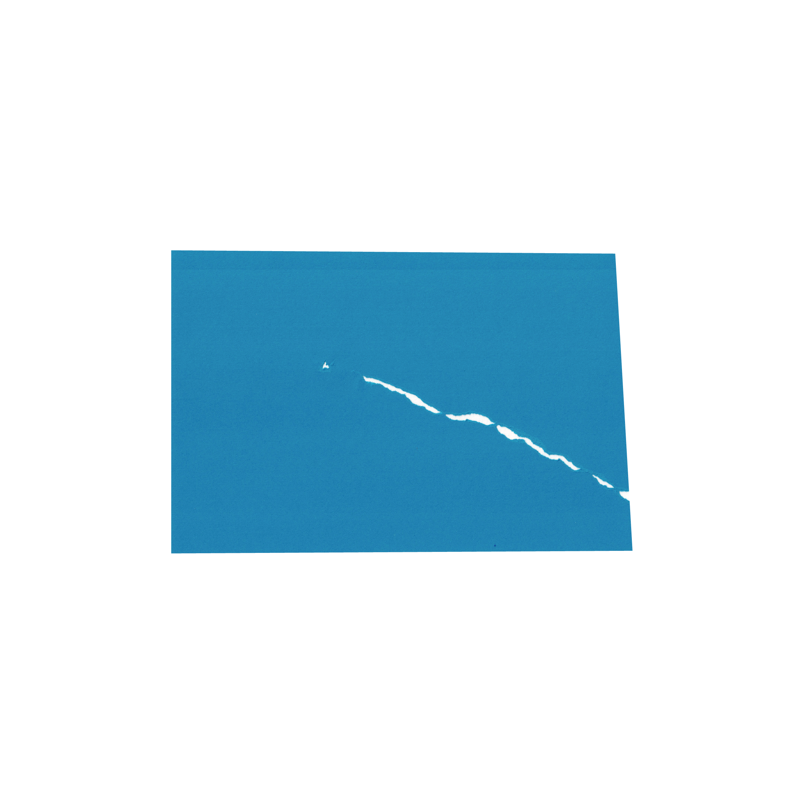
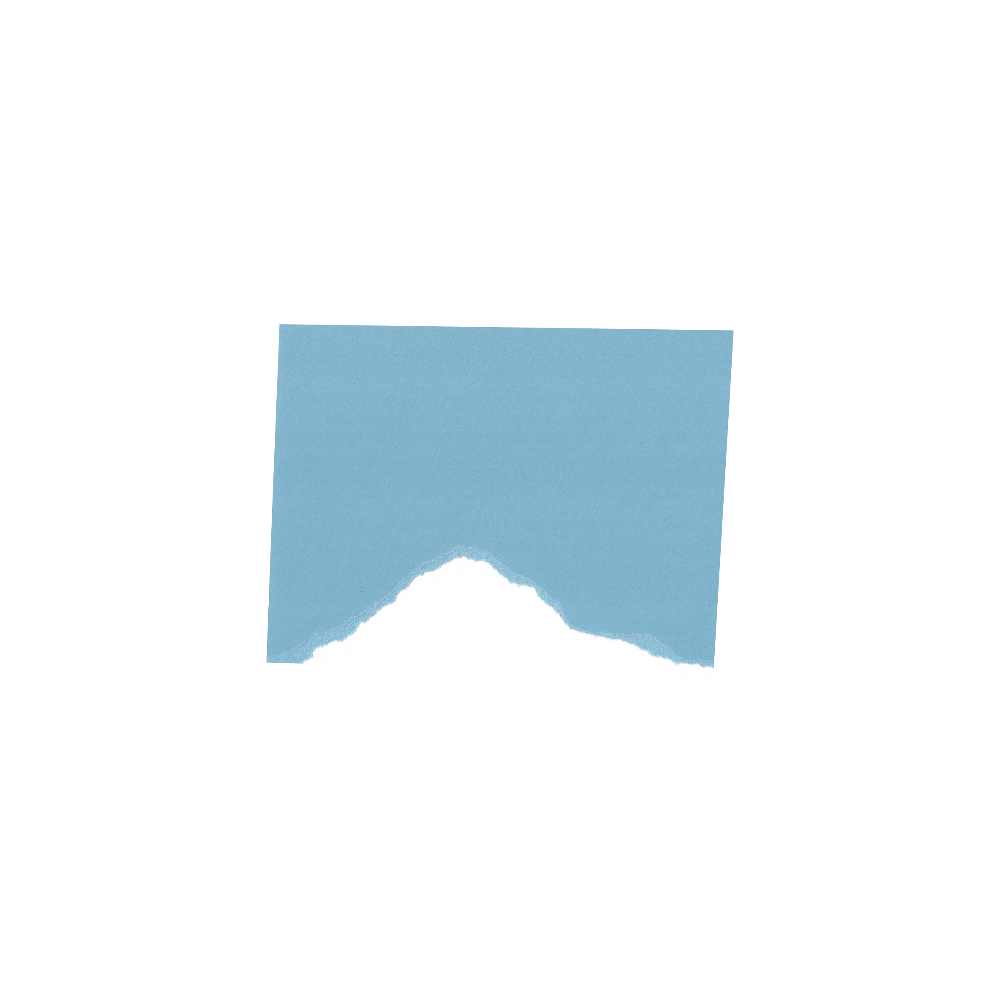

空のかたち
青い紙をちぎると、そこに飛行機雲が現れた。形を持たない雲と、紙をちぎるという操作の出来ない行為に繋がりを感じた。そして、紙の外形に角度を付け一辺から二辺を切る。そこには窓から空を眺めるような影響を与える。青い紙をちぎる。切る。紙に対する関与の違いから二つの意味が生まれ、それらが一体となった空のかたち。
Graduation Works
Instructor : Tsunao Nagasaki
Nozomi Terashima
2026





